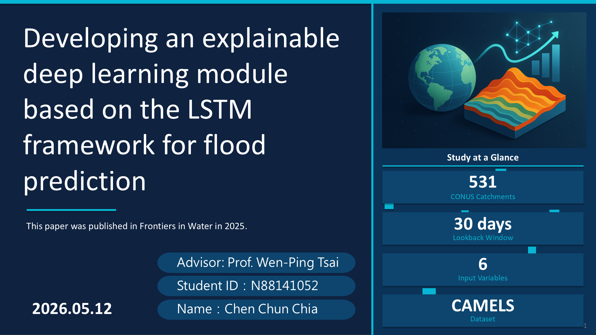

第
1
/ 17 頁
完成 0 / 17

English Script — 點擊播放 / 雙擊編輯
☁ 儲存
↩ 重設
▶ 全部播放
■ 停止
載入語音中…
慢速 0.7×
學習 0.85×
正常 1.0×
快速 1.2×
↺
⚡ 用 Edge 開啟可解鎖 50+ 種 Natural 人聲
用 Edge 開啟
📱 iPhone 語音選項太少？iOS 所有瀏覽器共用系統語音，需手動安裝英文語音包：
設定 → 輔助使用 → 語音內容 → 聲音 → English
選任一英語聲音下載 → 回來重新整理頁面即可出現更多選項
▶
中文對照
☁ 同步到其他裝置
掃描 QR Code 或複製連結，在手機開啟即自動套用
複製
關閉
▶ 聽發音
✕